Can a video world model close the sim-to-real gap? Lessons from a contact-rich insertion task
· Jiayu Zhou
TL;DR
We used a video world model (Cosmos3-Nano) as a learned renderer that turns simulator frames into realistic camera images, and asked two questions on a hard, contact-rich task: does it make the sim look real, and does a sim rendered this way predict what a policy will do on the real robot?
- It makes the sim look real, cheaply. After fine-tuning on about 10 minutes of real video (20 episodes) from one rig, Nano styles sim frames at about 0.06 s per frame in autoregressive mode, without flicker between chunks. Measured against the real cameras, it halves the per-frame distance of raw sim (KID 0.07–0.10 against 0.16–0.23) and cuts FVD two to three times, though it stays about 20 times further from real than real is from itself.
- A styled sim predicts the real robot better than the raw sim, seed by seed, but not reliably in aggregate. Over two policies, agreement with the real rig per seed (Cohen's κ) was 0.54 vs 0.00 and 0.13 vs −0.38 (styled vs raw sim). The overall success rate, however, can be off in either direction, and styling each decision frame autoregressively instead of on its own does not change that (κ = 0.00, section 5.6).
- The real gap is mostly not about appearance. Real failures were grasp misses traced to a 0.28° camera rotation and a ~3 mm arm-settling bias. The same real actions replayed in sim seat the gear only 2 times out of 8: the dynamics differ even when the visuals do not matter.
- Styling changes the policy's very first decision. For the same state, styled frames move the first planned action chunk by 13–19 mm; the shift comes from how the table and background are rendered, read mainly through the wrist camera, not from the objects. Everything downstream (a different grasp, a missed insertion) follows from that one decision.
- Data beat algorithms. Behavior cloning on 1024 clean demonstrations (29/32 in sim, 8/16 on the robot) beat residual RL, a reverse curriculum, teacher–student distillation and DAgger.
1. Why this question
Policies trained in simulation see rendered images that look nothing like the real cameras, and the usual fixes (domain randomization, hand-built photorealistic scenes) are costly and still leave a gap. Video world models now generate realistic video conditioned on structure such as edges and depth. That suggests a shortcut: render the simulator however is convenient, then let a world model repaint every frame to look like the real rig.
That idea has two uses. The first is training: style the simulated demonstrations so that the policy learns from realistic images. The second, which this project focuses on, is evaluation: run a policy in the styled simulator ("augsim") and use its success rate to predict real-robot performance without touching the robot. Evaluation is the stricter test. A styled sim that predicts the real outcome of each episode would save most real-robot evaluation time.
We chose a deliberately hard task, tight-tolerance gear insertion, and built the full loop: calibrate the real rig, mirror it in simulation, train a visuomotor policy in simulation, and evaluate the same policy on the same initial states in raw sim, in augsim and on the real robot.
2. Setup
| Component | What we use |
|---|---|
| Task | Pick a gear from the table and insert it fully onto a shaft on a plate (Franka FR3) |
| Real rig | FR3 with a Franka hand and the Polymetis controller; the policy sees one wrist camera (wrist2) and two static cameras (right_static, left_static) |
| Simulator | MuJoCo through mujoco-robot-control ("mrc"): a port of the rig's Polymetis controller, native SDF contacts, cameras from calibration round 29 |
| Policy | ACT (action chunking transformer): 30 Hz, chunks of 100 actions, 224 px images rendered at 720 px and downsampled |
| Demonstrations | A scripted expert; 1024 demonstrations that insert the gear fully, with no recovery behavior |
| Styler | Cosmos3-Nano (8B) fine-tuned for edge + depth control at 256 px on 20 real episodes from the current rig (about 10 minutes of video) |
| Evaluation | The same 16 seeded initial states (seeds 1000000–1000015) in raw sim, augsim and on the real rig |
| Compute | NCSA Delta GH200 nodes; most jobs ran in 2-hour interactive slots |
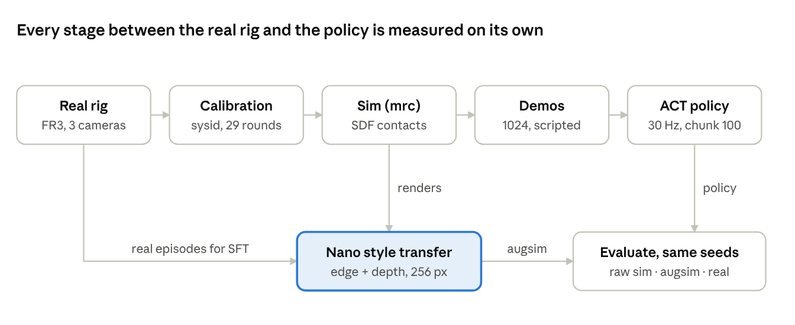
The top row builds the policy. The styler sits on a side branch, so the same policy and seeds can be scored in raw sim, in augsim and on the rig.
3. A world model as a sim-to-real renderer
Cosmos3-Nano gave the best trade-off we found between image quality, speed and temporal consistency. It measurably brings the sim closer to the real cameras (below), though still far from indistinguishable, and the backbones were compared under different settings.
Speed. The table lists the latencies we measured. The settings differ, so this is not a controlled benchmark.
| Backbone | Setting | Latency |
|---|---|---|
| img2img-turbo (pix2pix-turbo) | 1 step, 512² | 0.148 s/frame |
| Cosmos3-Nano, autoregressive episode | 256², 10 steps, cache_dit, 1513 frames × 3 cameras | ~0.064 s/frame (291 s per episode) |
| Cosmos3-Nano, one chunk | 256², 121 frames, 10 / 35 steps | 16.9 / 6.2 frames/s |
| Cosmos3-Nano, closed-loop request | 25-frame static clip, 10 steps | 1.95 s per request |
| Cosmos3-Nano, autoregressive, the 128 training demos (section 6.1) | 256², 10 steps, cache_dit, 121-frame chunks; 167,229 frames (128 episodes × 3 cameras) on one GPU | 0.057 s/frame (17.5 frames/s); 2.7 h of inference in total |
| Cosmos3-Nano, AR_augsim decision window (section 5.6) | 101 frames conditioned on the previous observation, 10 steps | 6.2 s per window (0.061 s/frame) |
| Cosmos-Transfer2.5, distilled | 4 steps, edge control | 0.32 s/frame |
| Cosmos-Transfer2.5 | 35 steps, edge + depth, 720² | 3.6 s/frame (7.2 s per styled frame in the closed loop) |
| SDXL with two ControlNets | 30 steps, 1024² | 4.7–5.6 s/frame |
Most of Nano's speed came from two changes: cutting the sampling steps from 35 to 10 (about 3.5× faster, visually equivalent), then step caching with cache_dit (14% faster, 34 dB PSNR against uncached output). Flash-attention and torch.compile were already on; TeaCache and request batching are not supported.
What we learned about training the styler.
| Question | Finding | Evidence |
|---|---|---|
| How long to fine-tune Transfer2.5 | 20k iterations ≈ 40k; 210k degraded quality | Visual comparison |
| How long to fine-tune Nano | 1000 iterations beat 500 | Augsim insertion rate 25% vs 6.25% (a policy trained on real data, 16 seeds) |
| Why an early Nano "lost the gear" | The wrist segmentation used for training was all foreground in 99 of 99 episodes, and training windows came only from the episode centre | Root-cause analysis; the fix raised the augsim grasp rate from 31% to 50% |
| Which control signals | Edge + depth; segmentation dropped | Segmentation merged gripper and gear, and resize and video-codec bugs corrupted it |
| Controls from sim or from real | Sim controls win: 19.0 vs 16.5 dB PSNR | Styler checkpoints trained on real-derived controls invent gripper artifacts |
| Depth source | Ground-truth inverse depth from the simulator; monocular depth on the real wrist camera fails | A 365 mm descent moves the estimated wrist depth by only 5 gray levels, in the wrong direction |
| Flicker | Autoregressive generation replaces blending overlapping windows | Blended windows drift between chunks; autoregressive was also faster (123 vs 177 s per episode) |
One caveat on "Nano is best": img2img-turbo at 12k iterations matched Nano's 25% augsim insertion rate, under a different policy and protocol. A single matched comparison would settle it.
How real does it look? (measured 2026-10-26). We scored every renderer against the real rig's camera frames from the 76k rollouts (16 episodes), per camera at the policy's 224 px. Per-frame metrics: KID on Inception features and the Fréchet distance on DINOv2 features (FD-DINOv2). Temporal metric: FVD on 16-frame clips (I3D features). As a floor, half of the real episodes (seeds 1000000–07) is scored against the other half (1000008–15), the half every source is compared with. The sim and styled episodes follow their own trajectories, so these are distribution distances, not paired ones.
| Source (vs real) | KID × 1000: wrist2 / right / left | FD-DINOv2: wrist2 / right / left | FVD: wrist2 / right / left |
|---|---|---|---|
| Real, other half (floor) | 4.6 / 2.8 / 4.5 | 66 / 75 / 93 | 154 / 47 / 131 |
| Raw sim | 233 / 168 / 155 | 1531 / 2044 / 2090 | 1803 / 700 / 1038 |
| ref_sim (section 8) | 175 / 185 / 171 | 1472 / 1574 / 1505 | 1215 / 491 / 683 |
| Nano, per-frame (the augsim decision frames) | 78 / 87 / 73 | 539 / 968 / 894 | — |
| Nano, autoregressive (the AR_augsim decision frames) | 65 / 82 / 80 | 464 / 809 / 809 | — |
| Nano, autoregressive stream (6 reconstructed episodes) | 80 / 90 / 100 | 551 / 964 / 977 | 713 / 255 / 441 |
On the same two episodes (probe 4), autoregressive styling also has the lower FVD on every camera: 586 / 255 / 491 against 696 / 311 / 551 for per-frame styling.
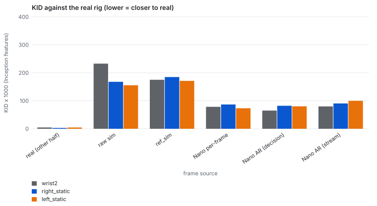
Nano roughly halves the per-frame distance to real (KID and FD-DINOv2) and cuts FVD two to three times compared with raw sim, but it remains about 20 times further from real than real is from itself. Hand-matching the appearance (ref_sim) lowers FD-DINOv2 and FVD against raw sim but not Inception KID, and stays far behind Nano. Autoregressive styling scores slightly better than per-frame styling on every metric that compares like with like.
4. Does a styled sim predict the real robot?
Not reliably in aggregate, but better than the raw sim seed by seed. The main policy (ACT trained on the 1024 demonstrations, checkpoint "76k") succeeds on 8 of 16 seeds on the real rig. The raw sim is optimistic and augsim is pessimistic.
| Setting (76k policy, seeds 1000000–1000015) | Success | 95% interval (Wilson) |
|---|---|---|
| Raw sim, the cameras the policy was trained with (calibration round 27b) | 16/16 | 81–100% |
| Raw sim, the cameras of the real rig on the test day (round 29) | 11/16 | 44–86% |
| Augsim (Nano, round-29 cameras) | 3/16 | 7–43% |
| Real rig, 2026-10-19 | 8/16 | 28–72% |
With 16 seeds, every interval spans about ±20 points, so claims must rest on per-seed agreement and failure modes, not on totals alone.
Per seed. The table lists, for every seed, how far the policy got in each setting: ✓ = inserted fully; otherwise the furthest stage reached (grasped, lifted, engaged the shaft, or no grasp).
| Seed | Raw sim, training cameras | Raw sim, rig cameras | Augsim | Real rig |
|---|---|---|---|---|
| 1000000 | ✓ | ✓ | engaged | no grasp |
| 1000001 | ✓ | ✓ | ✓ | ✓ |
| 1000002 | ✓ | ✓ | lifted | no grasp |
| 1000003 | ✓ | ✓ | lifted | lifted |
| 1000004 | ✓ | ✓ | lifted | no grasp |
| 1000005 | ✓ | engaged | engaged | lifted |
| 1000006 | ✓ | ✓ | ✓ | ✓ |
| 1000007 | ✓ | engaged | lifted | ✓ |
| 1000008 | ✓ | engaged | engaged | ✓ |
| 1000009 | ✓ | engaged | engaged | ✓ |
| 1000010 | ✓ | ✓ | engaged | no grasp |
| 1000011 | ✓ | ✓ | engaged | ✓ |
| 1000012 | ✓ | engaged | engaged | ✓ |
| 1000013 | ✓ | ✓ | engaged | ✓ |
| 1000014 | ✓ | ✓ | ✓ | no grasp |
| 1000015 | ✓ | ✓ | lifted | no grasp |
| Total inserted | 16/16 | 11/16 | 3/16 | 8/16 |
Raw sim with the rig's cameras agrees with the real outcome on 5 of 16 seeds (Cohen's κ = −0.38, worse than chance). Augsim agrees on 9 of 16 (κ = 0.13), mostly on shared failures. A second policy, an earlier one trained on 512 demonstrations ("52k", styled with Cosmos-Transfer2.5), shows the same ordering more strongly:
| Seed (52k policy) | Raw sim | Augsim (Transfer2.5) | Real rig |
|---|---|---|---|
| 1000000 | engaged | engaged | ✓ |
| 1000001 | engaged | engaged | lifted |
| 1000002 | engaged | ✓ | no grasp |
| 1000003 | engaged | engaged | grasped |
| 1000004 | engaged | ✓ | lifted |
| 1000005 | engaged | engaged | lifted |
| 1000006 | engaged | ✓ | ✓ |
| 1000007 | ✓ | engaged | lifted |
| 1000008 | ✓ | engaged | lifted |
| 1000009 | ✓ | ✓ | ✓ |
| 1000010 | lifted | engaged | grasped |
| 1000011 | engaged | ✓ | ✓ |
| 1000012 | ✓ | engaged | pre-insert |
| 1000013 | engaged | engaged | pre-insert |
| 1000014 | engaged | engaged | no grasp |
| 1000015 | engaged | lifted | lifted |
| Total inserted | 4/16 | 5/16 | 4/16 |
For 52k, augsim shares 3 of the 4 real successes and agrees on 13 of 16 seeds (κ = 0.54); raw sim agrees on 10 (κ = 0.00). (The 52k evaluations warp the sim cameras to the rig's poses of that day, as the rig did for that policy.)
Where each setting fails. For the 76k policy, the stages reached differ systematically:
| Stage reached (of 16) | Raw sim, rig cameras | Augsim | Real rig |
|---|---|---|---|
| Grasp | 16 | 16 | 10 |
| Engage the shaft | 16 | 11 | 8 |
| Fully seated | 11 | 3 | 8 |
Real failures happen before contact: 6 grasp misses and 2 lifts that never reached the shaft. On the rig the fingers closed 7–11 mm high and aimed 5–14 mm toward +y, and an input-swap test traced the +y aim to a 0.28° rotation of the right static camera. Raw-sim failures happen at contact: all 5 engage the shaft but never seat. Augsim grasps every time, like raw sim, but fails at insertion more often. The styled images seem to degrade the fine alignment the policy needs for insertion rather than reproduce the real error; section 5 measures this directly.
Side-by-side videos. Each video has one row per camera (wrist2, right static, left static) and three columns: raw sim on the rig's cameras | augsim, with every frame of the same augsim episode restyled by Nano | the real rollout. The label on each column is that setting's outcome; a shorter column holds its last frame.
Seed 1000001: all three succeed.
Seed 1000014: both simulators succeed; the real arm misses the grasp.
Seed 1000000: raw sim succeeds, augsim engages but never seats, the real arm misses the grasp.
Seed 1000013: raw sim and the real arm succeed; augsim engages but never seats.
Seed 1000007: the real arm succeeds; raw sim engages but never seats, augsim never engages.
Seed 1000005: all three fail (the real arm lifts but never reaches the shaft).
5. Why sim, augsim and the robot disagree
Augsim and the real robot fail for different reasons. Augsim's failures start at the very first action chunk, where the styled images shift the planned approach by about 2 cm, so the gear ends up in a different place in the hand. The real robot differs from sim in dynamics: the real arm tracks the same commands about 3.5 mm differently, enough to break a sub-millimetre insertion. Probes 1–3 establish this; probe 4 checks how stable the styling is over time, and probe 5 traces where inside the policy the styled image turns into a different plan.
5.1 Probe 1: the real robot's actions, replayed in sim
For each of the 8 real successes we replayed the exact 8-dimensional actions the robot executed (7 joint targets plus a gripper event) open-loop in sim, from the same initial state. All 8 grasp and lift in sim, but only 2 fully seat. As a check, feeding the robot's recorded camera images and joint states back into the policy reproduces the executed chunks to within 0.006.
| Seed | Sim grasp | Lift | Engage | Fully seated | TCP gap, median (mm) | TCP gap, max (mm) |
|---|---|---|---|---|---|---|
| 1000001 | ✓ | ✓ | ✗ | ✗ | 3.7 | 8.0 |
| 1000006 | ✓ | ✓ | ✓ | ✗ | 3.1 | 12.5 |
| 1000007 | ✓ | ✓ | ✓ | ✗ | 4.4 | 8.9 |
| 1000008 | ✓ | ✓ | ✗ | ✗ | 3.6 | 9.1 |
| 1000009 | ✓ | ✓ | ✓ | ✗ | 3.9 | 7.6 |
| 1000011 | ✓ | ✓ | ✓ | ✓ | 3.6 | 6.0 |
| 1000012 | ✓ | ✓ | ✓ | ✗ | 4.2 | 8.1 |
| 1000013 | ✓ | ✓ | ✓ | ✓ | 3.5 | 6.7 |
"TCP gap" is the distance between the sim gripper's tool center point and the real one, both computed from the joint angles with the same forward kinematics. It exceeds 5 mm within 2–3 steps, stays at 3–4 mm and peaks at 6–12 mm during insertion.
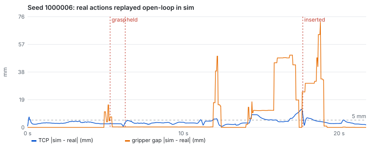
The videos show the real rollout (left column) next to the sim replay of the same actions (right column); the overlay gives the TCP gap at each frame. On seed 1000006 the real gear is on the shaft at 17 s, while in sim the same commands leave it tilted in the hand beside the shaft.
5.2 Probe 2: same state, raw vs styled frames
We took two seeds that succeed in raw sim but fail in augsim (1000013 and 1000000). Along each augsim episode, replayed exactly, we queried the policy at every frame twice with the same joint state: once on the raw sim render and once on the Nano rendering of that state. The raw-sim episode of the same seed was replayed alongside, to see when the two trajectories part.
| Measure | Seed 1000013 | Seed 1000000 |
|---|---|---|
| Gap between the chunks planned from raw and styled frames at t = 0 | 19.3 mm | 13.4 mm |
| The same gap at later decision steps (median) | 3.0 mm | 2.4 mm |
| Raw-sim and augsim trajectories more than 5 mm apart from | step 2 | step 3 |
| Trajectory gap at 3.3 / 6.7 / 10 / 13.3 s | 19.3 / 11.1 / 4.9 / 2.7 mm | 15.7 / 7.9 / 4.7 / 4.7 mm |
| Grasp, raw sim / augsim | step 161 / 157 | step 160 / 156 |
| Gear positions more than 5 mm apart from | step 186 (right after the grasp) | step 181 |
| Engage the shaft, raw sim / augsim | step 298 / 458 | step 293 / 376 |
| Fully seated, raw sim / augsim | step 427 / never | step 474 / never |
The split happens at the first decision. With styled frames the first plan aims about 2 cm differently, and the arm takes about 10 s to come back within a few millimetres. By then it has closed on the gear at a different spot, so the gear sits differently in the hand. Insertion then reaches the shaft 80–160 steps later and never seats. After the first chunk, styled and raw frames move the plan by only 2–3 mm.
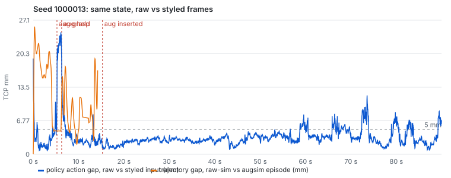
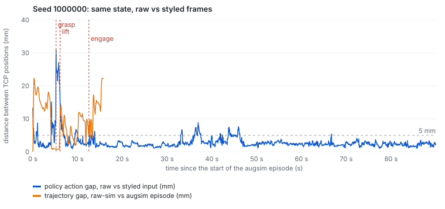
In the videos below, the columns are the raw-sim episode on its own trajectory | the augsim episode rendered raw | the same augsim state as Nano renders it; the overlay gives the gap between the two planned chunks. In the first seconds the arms in the left and middle columns already move apart.
5.3 Probe 3: is the reconstruction a fair stand-in for what the policy saw?
Probe 2 used the autoregressive reconstruction, not the frames the policy saw during the augsim evaluation, which were styled one decision at a time and were not saved. We regenerated those frames losslessly by replaying each episode through the same closed-loop styling server (same checkpoint, 10 steps, seed 1, a 25-frame static clip per decision, controls from the same render). The reconstruction is a faithful stand-in: at every decision step the two are about 27 dB PSNR apart, and the policy's plans from them differ by under 2 mm, an order of magnitude less than the raw-vs-styled gap at t = 0.
| Decision steps (27 per seed) | Seed 1000013 | Seed 1000000 |
|---|---|---|
| PSNR, evaluation-time frames vs reconstruction (median; wrist2 / right / left) | 27.2 / 27.7 / 26.0 dB | 27.3 / 28.1 / 25.9 dB |
| PSNR, evaluation-time frames vs raw render (range) | 8.5–17.9 dB | 8.5–17.4 dB |
| Plan gap, evaluation-time frames vs reconstruction: t = 0 / median | 3.0 / 1.8 mm | 3.6 / 1.7 mm |
| Plan gap, evaluation-time frames vs raw: t = 0 / median | 16.5 / 3.2 mm | 16.8 / 3.1 mm |
| Regenerated frames reproduce the recorded chunk (largest action difference): t = 0 / other steps | 0.015 / 0.005–1.9 | 0.008 / 0.003–1.5 |
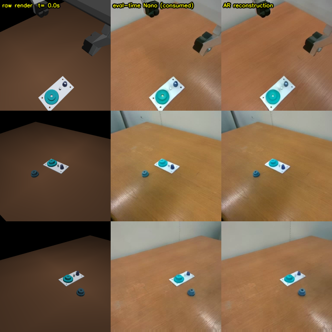
Nano is not exactly repeatable from run to run. At t = 0 the regenerated frames reproduce the recorded chunk almost exactly, so those are the true inputs. At later steps the reproduction is off by up to 0.8, and up to 1.9 in the gripper output. Two regenerations of the same t = 0 frame gave plan gaps of 19.5 and 16.5 mm against raw. Nano's own run-to-run noise therefore moves the plan by 1–3 mm, the same size as the difference between evaluation-time frames and reconstruction, and well below the 16–20 mm first-chunk divergence.
5.4 Probe 4: autoregressive vs per-frame styling
Motivation. The closed-loop styling server styles each decision frame on its own (a 25-frame static clip of that frame's controls, keeping frame 0). The reconstructions above instead style a whole camera stream autoregressively, each 121-frame chunk conditioned on the previous one. Does autoregression measurably improve visual quality, in particular frame-to-frame consistency, or is per-frame styling already stable?
Method. One augsim success (seed 1000001, the whole 12.5 s) and one failure (seed 1000013, the first 30 s: approach, grasp and insertion) are replayed exactly. Every frame of all three cameras is styled on its own with the server's exact request, then compared side by side with the autoregressive reconstruction and the raw render. The metric is the mean absolute change between consecutive frames; the raw render gives the true motion, so any excess over it is flicker. (A second planned metric, the temporal spread of a background patch, turned out unusable: the arm crosses that patch in the static views.)
Result. Autoregressive styling is clearly more stable over time. Per-frame styling adds about 1.6–2.0 gray levels of change per frame on top of the true motion; autoregressive styling adds 0.3–0.5, so 3.5–6× less flicker. The only near-tie is the wrist camera of the success seed, where the arm moves for most of the 12.5 s and true motion dominates (1.10 vs 0.90). In the failure seed the arm is still for long stretches, and there the wrist camera shows the same 3.5× gap. For reference, the raw render's own medians (wrist2 / right / left) are 1.89 / 0.67 / 0.48 for seed 1000001 and 0.57 / 0.07 / 0.04 for seed 1000013.
| Change between consecutive frames in excess of the raw render (0–255 gray levels, median), per-frame / autoregressive | wrist2 | right static | left static |
|---|---|---|---|
| Seed 1000001 (augsim success, whole 12.5 s) | 1.10 / 0.90 | 1.62 / 0.38 | 1.83 / 0.32 |
| Seed 1000013 (augsim failure, first 30 s) | 1.86 / 0.54 | 1.89 / 0.46 | 1.96 / 0.38 |
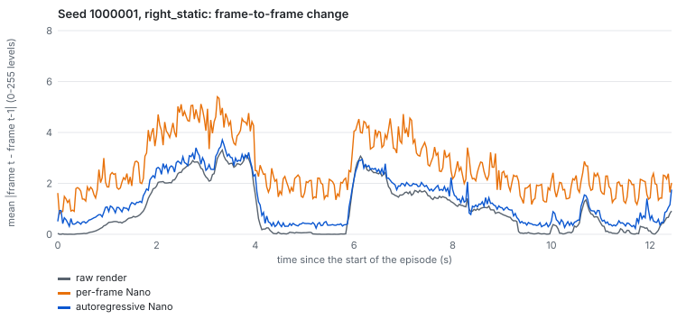
Per-frame styling re-samples texture, glare and shadows independently at every frame, while the autoregressive stream conditions each chunk on the previous one, and the numbers show that this matters. It matters most for training on styled video and for judging rollouts by eye. For the closed-loop evaluation it matters less: the policy re-plans about once per second, and the per-decision difference between evaluation-time frames and the reconstruction is under 2 mm (probe 3). Practical rule: use autoregressive styling wherever a whole stream is available (training data, reconstructions), and per-frame styling only where latency forces it.
5.5 Probe 5: where inside the policy the styled image becomes a different plan
Motivation. The two inputs differ only in pixels (joint state and latent are identical), so any difference necessarily enters through the policy's ResNet18 image encoder. The open questions are how it propagates: where it grows or is absorbed, whether a global color shift alone explains it, which camera and which image region carry it, and where the policy attends.
Method. Seeds 1000013 and 1000000, and seed 1000001 as a control (both succeed). Every 10th frame of the first 30 s, the raw render and the reconstruction of the same state go through ACT with hooks on every stage.
- Layer profile: the relative difference ‖a − b‖ / ‖a‖ after each ResNet stage and the projection (per camera), each of the four encoder layers (image tokens per camera, and the joint-state token), the decoder and the planned chunk. The yardstick is the same quantity between raw frames 1 s apart.
- Global color: raw frames color-matched to the styled ones (per-channel mean and standard deviation), and the planned-chunk gap this alone produces.
- Region and camera: at the encoder input, the styled run with the raw tokens of one region (gears and plate, gripper, arm, table and background, from the renderer's part labels) or one camera put back, and the reverse.
- Attention: the decoder's cross-attention from the first 20 action queries (0.67 s) as 7 × 7 maps per camera, overlaid on the raw and styled frames, plus the share of attention on the object tokens.
Result. The difference is born in the image encoder and partly absorbed by the transformer. It is carried by the table and background, mostly through the wrist camera, and the policy keeps looking at the same places.
- Layer profile. After the first ResNet stage the styled and raw activations already differ by 65%, peaking at 75–82% in stages 2–3: 1.5–2.1× the difference between raw frames 1 s apart. Through the four encoder layers the difference falls to 36–38%, and after the decoder to 9–12%, at or below the 1-s-of-motion yardstick. The vision encoder sees styled images as very different; the transformer removes most of that, but what is left at t = 0 still moves the first plan by 13–19 mm.
- Color alone explains little. Matching the raw frames' per-channel color statistics to the styled ones moves the first plan by only 2.7–3.5 mm, under a fifth of the full gap. Texture and structure (wood grain, glare, background) carry the rest.
- Table and background carry the first-decision gap; the objects do not. At t = 0, putting the raw gear-and-plate tokens, or the gripper tokens, back into the styled run leaves the gap almost unchanged. Putting back the table-and-background tokens (40–48 of the 49 tokens per camera) shrinks it to 2.4–3.7 mm, and injecting only those styled tokens into the raw run recreates most of it.
- The wrist camera matters most. Restoring only the wrist camera's raw tokens shrinks the t = 0 gap to 3.1–5.4 mm; restoring either static camera alone leaves 11–18 mm.
- Attention barely moves. Raw and styled cross-attention maps correlate at 0.87–0.94; in the static cameras attention sits on the plate and gear in both. The wrist camera's attention on object tokens drops only slightly (0.18 → 0.15–0.16).
- The control seed shows the same shift. Seed 1000001, which succeeds in augsim, has the same 18.5 mm first-plan shift with the same token pattern. The shift alone does not decide the outcome; whether the shifted grasp still works does.
| Planned-chunk gap to the raw plan at t = 0 (TCP mm) | 1000013 (augsim fails) | 1000000 (augsim fails) | 1000001 (augsim succeeds) |
|---|---|---|---|
| Styled vs raw (full gap) | 19.3 | 13.4 | 18.5 |
| Color-matched raw vs raw | 3.5 | 2.7 | 3.4 |
| Styled run, raw gear-and-plate tokens put back | 19.1 | 13.3 | 18.5 |
| Styled run, raw gripper tokens put back | 18.2 | 12.6 | 17.4 |
| Styled run, raw table-and-background tokens put back | 3.7 | 2.4 | 3.3 |
| Raw run, styled table-and-background tokens put in | 18.0 | 12.5 | 17.3 |
| Styled run, raw wrist-camera tokens put back | 5.2 | 3.1 | 5.4 |
| Styled run, raw right-static tokens put back | 15.5 | 11.0 | 14.1 |
| Styled run, raw left-static tokens put back | 17.8 | 12.8 | 17.8 |
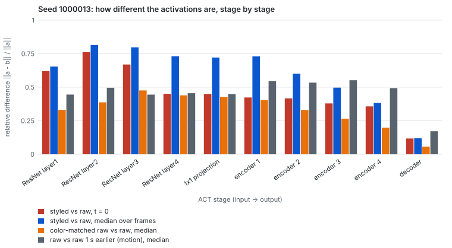
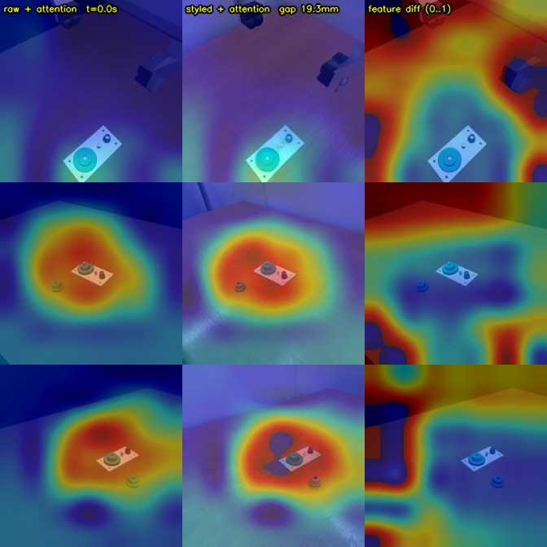
The styler's rendering of the table and background, not of the objects, shifts the policy's first plan, and the policy reads that shift mainly through the wrist camera. Two cheap remedies follow: train with heavier appearance randomization of the table and background (which ref_sim does, section 8), or make the policy less sensitive to background, for example by masking background tokens. Whether either brings augsim closer to the real robot is open.
5.6 AR_augsim: closed-loop augsim with autoregressive styling
Motivation. Probe 4 showed that autoregressive styling is 3.5–6× more consistent over time than styling each frame on its own, but the closed-loop augsim evaluation in section 4 still styles every decision frame on its own. AR_augsim applies the autoregressive method inside the loop: when the policy is queried at frame 100, the styled frame it sees is generated from the controls of frames 0–100, continuing the styled stream it saw at frame 0, instead of from frame 100 alone. Does an evaluation that sees a temporally consistent styled stream agree better with the real robot, per seed, than per-frame augsim?
Method. The same 76k policy, the same 16 seeds, cameras (round 29), Nano checkpoint, 10 sampling steps and controls as the per-frame augsim evaluation in section 4; only the styling of decision frames changes.
- First decision (frame 0): styled exactly as before (a 25-frame static clip of frame 0's controls), since there is no history yet.
- Every later decision t: the simulator records every frame's edge and depth controls. At decision t (every 100 frames, since the policy executes its whole 100-step chunk), Nano generates the 101-frame window from the previous decision to t, conditioned on the styled frame the policy saw at the previous decision. The policy sees the window's last frame.
- Causality: within a window, earlier frames can depend on controls that come later in the same window, so only the endpoint, which has no future, is ever used as an observation. Every window is kept, so the whole styled stream can be shown next to the raw sim and the real rollout.
Implementation and cost. Server NANO_AR=1, client WMRL_STYLE_AR=1, jobs/augsim_nano_eval.sbatch AR=1. A one-seed smoke run (seed 1000001) confirmed that the anchored request works: the window starts from the frame the policy saw, and the styled table, light and objects stay consistent across the window. A window request takes 6.2 s per camera against 2.0 s for a static clip, plus about 60 s per decision to render the history, so the 16 seeds took about 3 hours on one GPU (per-frame augsim: 73 minutes).
Result. AR_augsim does not bring augsim closer to the robot. It seats the gear on 4 of 16 seeds (per-frame augsim 3, real rig 8) and agrees with the real outcome on 8 of 16 seeds (κ = 0.00; per-frame augsim 9 of 16, κ = 0.13). The stages reached barely move: grasp 16, engage 12, seated 4, against 16, 11 and 3 per-frame. Four seeds change outcome, in both directions: 1000002 and 1000003 now reach the shaft, 1000005 no longer does, and 1000010 now seats, on a seed where the real arm misses the grasp. That spread is what Nano's own run-to-run noise could produce (probe 3).
| Seed | Raw sim, rig cameras | Augsim, per-frame | AR_augsim | Real rig |
|---|---|---|---|---|
| 1000000 | ✓ | engaged | engaged | no grasp |
| 1000001 | ✓ | ✓ | ✓ | ✓ |
| 1000002 | ✓ | lifted | engaged | no grasp |
| 1000003 | ✓ | lifted | engaged | lifted |
| 1000004 | ✓ | lifted | lifted | no grasp |
| 1000005 | engaged | engaged | lifted | lifted |
| 1000006 | ✓ | ✓ | ✓ | ✓ |
| 1000007 | engaged | lifted | lifted | ✓ |
| 1000008 | engaged | engaged | engaged | ✓ |
| 1000009 | engaged | engaged | engaged | ✓ |
| 1000010 | ✓ | engaged | ✓ | no grasp |
| 1000011 | ✓ | engaged | engaged | ✓ |
| 1000012 | engaged | engaged | engaged | ✓ |
| 1000013 | ✓ | engaged | engaged | ✓ |
| 1000014 | ✓ | ✓ | ✓ | no grasp |
| 1000015 | ✓ | lifted | lifted | no grasp |
| Total inserted | 11/16 | 3/16 | 4/16 | 8/16 |
| Agrees with the real outcome | 5/16 (κ = −0.38) | 9/16 (κ = 0.13) | 8/16 (κ = 0.00) | — |
✓ = inserted fully; otherwise the furthest stage reached.
Why it does not help. The decisive shift happens at the first decision: probes 2 and 5 found the first plan moved by 13–19 mm, carried by the styled table and background. Both methods style frame 0 the same way, because there is no history yet, so the first plan and the grasp that follows are unchanged. Autoregression only changes later decisions, where styled and raw plans already differ by just 2–3 mm. Temporal consistency improves how the styled stream looks (probe 4), not this policy's decisions. To move augsim closer to the robot, the first styled frame itself has to change, for example by conditioning it on a real image of the rig.
6. Getting a policy that works in sim
Plain behavior cloning on 1024 clean, full-insertion demonstrations gave the best policy: 29/32 in raw sim and 8/16 on the real robot, the best real result of the project. Every algorithmic addition either failed or did not survive a rerun, and in each case we found a specific cause.
| Approach | When | Best result | Why it stopped |
|---|---|---|---|
| Staged state-based PPO (pick, place, insert) | Jun 16–18 | 94.5% chained on an eased distribution; 43.75% from all sides | Worked, but state-based; never distilled into a visuomotor policy under realistic gripper physics |
| SERL / RLPD visuomotor RL | Jul 18–20 | 0% in 3 runs | No learning signal from the sparse reward on a contact-rich task |
| Residual PPO on top of ACT | Aug 20–29 | 53.1% → 65.6% (32 seeds); one +15.6-point gain collapsed on rerun | Exploration noise exceeded the 0.5 mm clearance; the base policy's grasp misses (1.4–7.5 cm) were beyond a millimetre-scale residual |
| Reverse-curriculum PPO teacher | Aug 29 – Sep 8 | Insertion stages 100%; full task 78%; grasp stage 68.8% | A local optimum, an unrandomized tooth phase, and five grasp-gate defects (for example a 20 mm width gate against the 29 mm physical stall) |
| Teacher → student distillation | Sep | Student 37.5% | Plateaued, then a dataset bug |
| DAgger with the scripted expert | Sep 5–8 | Round 1: 18/32 → 29/32 | Every further round fell to 4–23/32; the evaluation environment had a physics hook that broke the expert (7/16 vs 16/16) |
| Residual PPO on the mrc sim | Oct 15–16 | Training success flat at 69–77% | About 1.4 s per environment step: too slow for the compute budget |
| Behavior cloning, 1024 full-insertion demonstrations | Oct 17–19 | 29/32 raw sim, 8/16 real | Remaining failures: 3 seeds in sim; grasp misses on the robot (section 4) |
Two lessons carry beyond this task. Data quality (only full insertions, no recovery behavior, gripper timing matched to the real hand) mattered more than any algorithm on top. And reinforcement learning in a high-fidelity contact simulator costs about 1.4 s per step, which has to be budgeted before RL is chosen. By demonstration count: 128 → 28/48, 512 → 59–62%, 1024 → 48/48 (an earlier sim) and 29/32 (the current one); these come from different simulators and protocols and are indicative only.
6.1 Training on Nano-styled demonstrations: 128 raw vs 128 styled (2026-10-28)
Motivation. Every policy so far was trained on raw-sim images. If the world model closes the appearance gap, a policy trained on styled demonstrations should be at home in the styled sim and, ideally, on the real rig. Styling all 1024 demonstrations was judged too costly, so the comparison runs at 128.
Method. We collected 128 fresh scripted demonstrations on the current sim (seeds 9000–9127, round-29 cameras; 128 of 128 kept), together with the full-resolution render, depth and part labels of every frame. One copy of the dataset is left raw. In the other, every frame of all three cameras is restyled by autoregressive Nano (121-frame chunks, edge and depth controls, the same checkpoint and settings as everywhere else) and resized to 224 px; actions and states are identical. Styling took 2.7 hours of inference on one GPU (one vLLM-Omni server on a GH200): 167,229 frames at 0.057 s per frame, about 3 hours of wall time with server start-up, spread over two 2-hour slots. Both datasets train ACT for 40k steps with the same recipe. Checkpoints are selected with the same plan, in raw sim, for both: raw128 picked step 20k (18/32 on the confirmation seeds) and nano128 step 24k (11/32). Both are then evaluated on the 16 standard seeds in raw sim and in per-frame Nano augsim.
Result. Each policy works in the look it was trained on and fails in the other: switching the look costs 7 to 8 seeds either way.
| Evaluated in | raw128 (trained on raw sim) | nano128 (trained on Nano-styled) |
|---|---|---|
| Raw sim | 10/16 (grasp 16, lift 15, engage 13) | 3/16 (grasp 16, lift 16, engage 11) |
| Augsim (per-frame Nano) | 2/16 (grasp 13, lift 13, engage 9) | 9/16 (grasp 16, lift 16, engage 14) |
| Real rig | rollout in progress (2026-10-28) | rollout in progress (2026-10-28) |
| Seed | raw128: raw sim | raw128: augsim | nano128: raw sim | nano128: augsim |
|---|---|---|---|---|
| 1000000 | ✓ | engaged | ✓ | engaged |
| 1000001 | engaged | engaged | engaged | lifted |
| 1000002 | lifted | lifted | lifted | engaged |
| 1000003 | ✓ | ✓ | engaged | ✓ |
| 1000004 | ✓ | engaged | engaged | lifted |
| 1000005 | engaged | lifted | lifted | ✓ |
| 1000006 | ✓ | no grasp | engaged | ✓ |
| 1000007 | grasped | no grasp | lifted | engaged |
| 1000008 | ✓ | lifted | lifted | ✓ |
| 1000009 | ✓ | engaged | engaged | ✓ |
| 1000010 | ✓ | no grasp | ✓ | ✓ |
| 1000011 | ✓ | engaged | engaged | ✓ |
| 1000012 | lifted | lifted | engaged | engaged |
| 1000013 | ✓ | ✓ | ✓ | ✓ |
| 1000014 | engaged | engaged | engaged | engaged |
| 1000015 | ✓ | engaged | lifted | ✓ |
✓ = inserted fully; otherwise the furthest stage reached. Both policies are evaluated with the rig's round-29 cameras.
Three points follow. First, Nano styling keeps what the policy needs: trained on styled images, the policy reaches 9/16 in the styled sim, close to raw128's 10/16 in its own look. Second, the appearance gap alone is large enough to break a policy: raw128 even misses three grasps in augsim, which it never does in raw sim. Third, the selection was run in raw sim for both arms, which favors raw128; nano128 might do better in augsim with a checkpoint chosen there. The deciding test is the real rig: if appearance is what separates sim from the rig, nano128 should do better there than raw128. Both are being rolled out on the real rig now (2026-10-28), on the same 16 seeds; the results will be added here.
7. The sim-to-real gap, stage by stage
No single stage explains the real failures; they appear where several small errors compound (camera pose → aim error → grasp miss). The table puts each stage's remaining error next to the effort it took.
| Stage | What went wrong | Fix | Remaining error | Effort |
|---|---|---|---|---|
| Camera calibration | Cameras moved often; a policy trained at old poses misses grasps | 29 calibration rounds (Jul 12 – Oct 19); an image warp; calibration versioned with the policy | Corner reprojection 0.1–0.26 px; board solve repeatable to ~2–3 mm / 0.15°; a 0.28° drift still caused 5–14 mm aim errors | ~3 months, continuous |
| Controller and system identification | A policy at 48/48 in sim failed on the robot: the sim used a different control law and different command labels | System-identification fits, then the lab's Polymetis controller port with its runtime built for aarch64 | Held-out tracking error 6.75 mm RMS against a 2 mm target; the real arm settles ~3 mm above its command, not modelled | ~3 weeks |
| Collision geometry | Whole-mesh SDF gave 0.06–0.16 mm false penetration and gear drift; convex decomposition was 24× slower | SDF split at the plate/shaft seam, shafts in 8 segments, no contact hacks | Drift 2–5 µm, penetration ≤ 0.012 mm; gear transmission test passes | ~2 weeks |
| Hand payload | The hand mount was reconstructed from video | Mesh reconstruction | Modelled 80.65 g vs real 177.02 g | open |
| Gripper logic | A 20 mm grasp gate vs the 29 mm physical stall; integrator windup put the pads on the teeth (17/64 failures); width-regressing actions stalled the real hand | A settle gate (64/64 and 320/320 grasps); an event-style gripper action | Real hysteresis 0.045 / 0.055 m and the 5 N grasp force matched | ~2 weeks over Sep–Oct |
| Initial-state alignment | Until 10/12, real "seeds" were different scenes from the sim seeds | Real seeds derived from the sim's nominal poses; overlay-guided placement | Placement error never measured in mm; overlay finger offset ~3.5 px | ongoing |
| Timing | Evaluations ran at 60 Hz against 30 Hz demonstrations until 8/20; sim gripper timing was 0.8–1.08 s vs 0.2–0.3 s real | Cadence fix; hand timing re-measured, demonstrations recollected, policy retrained | Real cameras lag ~5 frames (170–200 ms) behind; real-time chunking not tried | days, but forced a full retrain |
| Rendering | Raw sim images look nothing like the real cameras | Nano style transfer (section 3) | Still about 20× the real-vs-real distance (KID, FD-DINOv2, FVD); hallucinations when cameras move (section 9) | ~2 months |
Where the seeds are lost. The chart below sorts each setting's 16 seeds by the furthest stage reached. The real rig loses its seeds before contact: 6 grasp misses and 2 lifts that never reach the shaft. Every simulator loses them at or after the grasp. Raw sim fails only at the final seating. Augsim moves the 76k policy's losses earlier, into the approach to the shaft, but never reproduces a grasp miss, with or without autoregressive styling. The ref_sim policy is nearly perfect in its own render and loses almost every seed between lift and shaft once Nano styles the images.
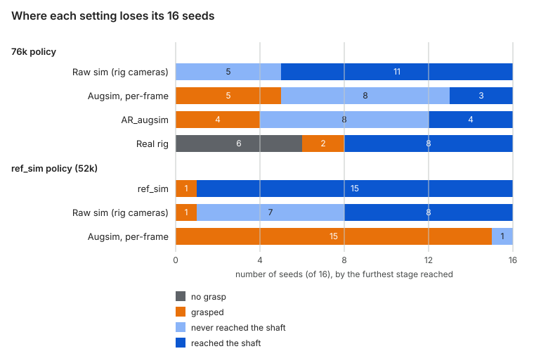
8. ref_sim: matching the simulator's appearance by hand (in progress)
The probes suggest a cheaper alternative to a learned renderer: make the simulator itself look like the rig, add per-episode domain randomization and training-time image augmentation, recollect the 1024 demonstrations in this refined simulator ("ref_sim"), retrain, and evaluate in ref_sim, raw sim, augsim and on the robot. If ref_sim predicts the robot as well as augsim, the world model is not needed for evaluation.
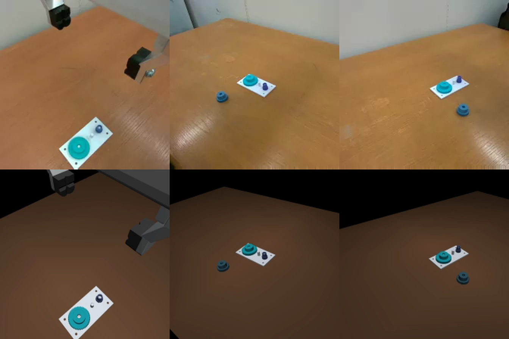
| Part | Real rig | Original sim | ref_sim |
|---|---|---|---|
| Background | Off-white walls behind the table | Black | Visual-only walls and floor |
| Table | Light orange wood, a large glare patch near the cameras | Flat dark brown, spotlight falloff | Matched color, specular sheen |
| Lighting | Bright, even, warm ceiling fluorescents | Two dim soft lights | Lights matched in direction and color temperature |
| Gripper | Black fingers, aluminium bracket | Uniform gray | Matte black fingers, metallic bracket |
| Gears, plate | Colors already close | Close | Brightness only |
| Camera | Slightly soft focus, compression noise | Perfectly sharp | Mild blur and sensor noise |
The appearance is a render-only layer: physics and the control interface are unchanged, so a ref_sim policy runs unchanged in the original sim, in augsim and on the robot. Each collected episode randomizes the lights, colors, specularity, exposure, white balance, and the camera poses by about 0.5° and 5 mm (the last real failures came from a 0.28° camera rotation). Training adds LeRobot's image transforms (color jitter, sharpness, small crops and blur).
Matching took nine rounds, then one simplification. A hard arm shadow the rig does not have (round 1); a texture crop that overlapped the real plate and printed a phantom plate on every tile (round 2); wood grain cut from a real frame that came out flat, then too contrasty, then blotchy (rounds 3–5); the table mirroring the arm as a dark smear (round 6); and whole-table color calibration on all three cameras (rounds 4–9). The synthesized wood grain still looked artificial, so the final layer renders the table in one plain matched color. Its whole-table median is 143/103/62 (RGB) on every camera, against the rig's 150/105/67 (wrist2), 148/110/62 (right static) and 160/117/67 (left static): within 12% per channel, where the original sim was 75/53/36. The images below show the final layer.
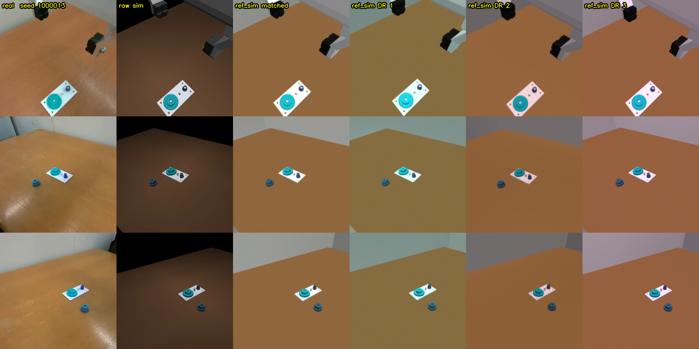
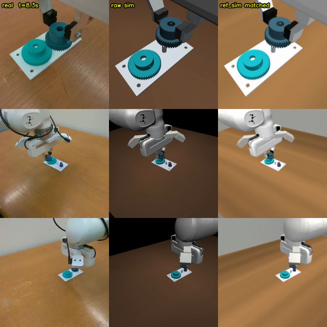
Pipeline status (2026-10-26). A smoke test passed: 8 demonstrations under randomization, 200 training steps with image transforms, and one closed-loop episode each in ref_sim and in the original sim with the same checkpoint. It caught one real bug: with image transforms on, the data-loader worker processes spin forever in OpenMP and never deliver a batch; one OpenMP thread per process fixed it. Collection is done: six 192-seed shards, 1152 of 1152 episodes kept (the scripted expert never failed under randomization), merged to the first 1024. Training (100k steps, image transforms on) started at 06:40 on 2-hour interactive slots, about 720 samples/s. At step 32k, queue waits between slots had become the bottleneck. Moving the remaining steps to one 8-hour batch job did not help: our jobs get far lower priority on the batch partition, and its estimated start was days away. Training therefore continues on the interactive slots, each now shared with the AR_augsim evaluation (section 5.6). Training finished all 100k steps on 2026-10-25. Checkpoint selection, run in ref_sim on 32 seeds, picked step 52k (28/32; the finalists at 92k and 96k reached 19/32 and 26/32). On the 16 standard seeds in ref_sim the selected checkpoint seats the gear 15 times; the one failure (1000001) lifts the gear but never reaches the shaft. The raw-sim and augsim evaluations followed (below), and the checkpoint is being rolled out on the real robot (2026-10-28, round-29 cameras, the same 16 seeds).
Table reflection (layer v12, 2026-10-24). On the rig the arm shows in the table only when the hand comes close to it. MuJoCo's reflection is a plain mirror at any distance, so the randomized draws that turned reflectance on showed a faint ghost of the raised arm on the table. The table's reflectance is now gated on the fingers' height above the table, applied at every rendered frame: full at 3 cm or less, none at 15 cm or more, linear in between. The maximum is 0.05 in the matched profile, and 0.02–0.10 in the randomized draws. The 1152 demonstrations above were collected with layer v11, which applied the drawn reflectance at every height. The fix applies to later collections and to the ref_sim evaluations.
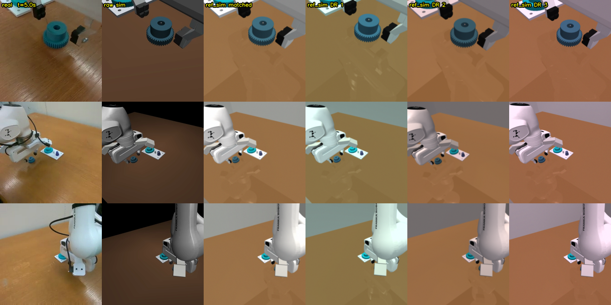
Results: the ref_sim policy in every simulator (2026-10-26). The ref_sim policy (step 52k) is as strong as the 76k policy in the look it was trained on: 15/16 in ref_sim, against 16/16 for 76k in its own raw-sim render. Off that look it degrades more than 76k does: 8/16 in raw sim (76k: 11/16) and 0/16 in augsim (76k: 3/16). In augsim it grasps and lifts every time but reaches the shaft only once.
| Seed | 76k: raw sim | 76k: augsim | 76k: real rig | ref_sim 52k: ref_sim | ref_sim 52k: raw sim | ref_sim 52k: augsim |
|---|---|---|---|---|---|---|
| 1000000 | ✓ | engaged | no grasp | ✓ | ✓ | lifted |
| 1000001 | ✓ | ✓ | ✓ | lifted | engaged | lifted |
| 1000002 | ✓ | lifted | no grasp | ✓ | engaged | lifted |
| 1000003 | ✓ | lifted | lifted | ✓ | engaged | lifted |
| 1000004 | ✓ | lifted | no grasp | ✓ | ✓ | lifted |
| 1000005 | engaged | engaged | lifted | ✓ | ✓ | lifted |
| 1000006 | ✓ | ✓ | ✓ | ✓ | engaged | lifted |
| 1000007 | engaged | lifted | ✓ | ✓ | lifted | lifted |
| 1000008 | engaged | engaged | ✓ | ✓ | ✓ | lifted |
| 1000009 | engaged | engaged | ✓ | ✓ | ✓ | lifted |
| 1000010 | ✓ | engaged | no grasp | ✓ | ✓ | lifted |
| 1000011 | ✓ | engaged | ✓ | ✓ | ✓ | lifted |
| 1000012 | engaged | engaged | ✓ | ✓ | engaged | lifted |
| 1000013 | ✓ | engaged | ✓ | ✓ | engaged | engaged |
| 1000014 | ✓ | ✓ | no grasp | ✓ | engaged | lifted |
| 1000015 | ✓ | lifted | no grasp | ✓ | ✓ | lifted |
| Total inserted | 11/16 | 3/16 | 8/16 | 15/16 | 8/16 | 0/16 |
All columns use the rig's round-29 cameras; "raw sim" is the original renderer, "augsim" the per-frame Nano styling. ✓ = inserted fully; otherwise the furthest stage reached.
Matching the appearance by hand did not make the policy robust to the styled images; it made it more specific to its own look. One likely reason connects to probe 5: the first-plan shift under styling is carried by the table and background, and ref_sim renders the table in a plain color (the synthesized grain was removed), so the wood grain that Nano draws, as the real table has, is new to this policy. The randomization varied color, light and blur, not texture. Augsim's 0/16 is therefore a warning for the real rollout, which will show whether augsim is right about this policy. If it is, the next ref_sim round should randomize table texture, or put back a realistic grain.
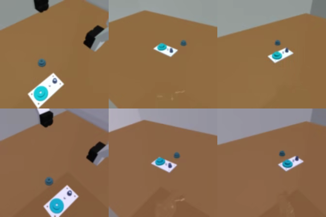
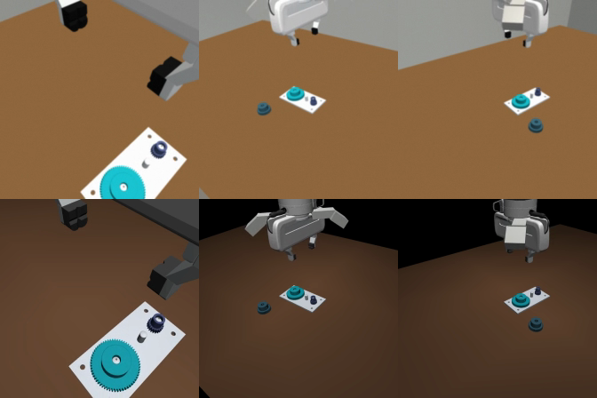
ref_sim can at best remove the first-decision shift seen in augsim. It cannot remove the ~3.5 mm tracking gap found in probe 1; modelling the real arm's settling bias is a separate fix.
9. Limitations
| Limitation | What we found | Status |
|---|---|---|
| The task mixes dynamics and rendering errors, so the rendering gap cannot be isolated | The disjoint failure modes in section 4 and probe 1 | Argued from sections 4, 5 and 7 |
| Camera-pose shifts make Nano hallucinate (an extra gear appears) | Not reproduced: no gear invented or dropped with a static camera turned up to 10° or moved up to 10 cm (test 1) | Tested on single styled frames; the earlier sightings came from long reconstructions |
| Fine-tuning with a fixed prompt removes prompt following | Confirmed: the fine-tuned model ignores every edit; the base model follows two of three (test 2) | Tested |
| No multiview consistency: each camera is styled on its own | Not a measurable problem at this level: Nano's color spread across the three cameras is no larger than the real rig's (test 3) | Tested on one scene, two moments |
| Small evaluation sets (16 seeds) | Intervals in section 4 | Report intervals everywhere |
| The styler's real data comes from one rig and one session | The training set | A scope limit |
Three inference-only tests (2026-10-27). Each uses one scene (seed 1000013 of the 76k raw-sim evaluation, at t = 0 and at 8.3 s with the arm over the gear) and the closed-loop server's request: edge and depth controls, a static clip, frame 0.
- Test 1, camera pose. We turned the right or left static camera by 2°, 5° and 10° about its vertical axis, or moved it 2, 5 and 10 cm sideways, which is far outside the poses the styler was trained on. We then counted gear-colored blobs that match no real gear, and real gears that lost their color. Across 28 styled frames Nano invented 0 gears and dropped 0. It keeps the scene's layout; its weak spot in these frames is the gripper, whose fingers it sometimes draws as curved black hooks.
- Test 2, prompts. We edited the prompt three ways (the carried gear red, warm sunset light, a yellow mug on the table) and styled the same controls with the base and the fine-tuned model. The base model turns the gear red and adds sunset light; the fine-tuned model produces the same image for every prompt. Neither adds the mug, because the edge and depth controls leave no room for an object that is not in the scene. Fine-tuning on a fixed caption has removed the text lever that RoboRender uses to vary textures and distractors.
- Test 3, multiview. We styled the same moment from all three cameras independently and measured how much the median color of the table and of the gears differs across the cameras (the largest minus the smallest value, averaged over R, G and B; 0–255 levels).
| Color spread across the 3 cameras (0–255 levels) | Real rig | Raw sim | Nano |
|---|---|---|---|
| Table, t = 0 | 8.0 | 11.7 | 6.7 |
| Gears, t = 0 | 32.8 | 57.5 | 28.3 |
| Table, 8.3 s | 15.0 | 19.0 | 13.3 |
| Gears, 8.3 s | 34.7 | 14.0 | 19.7 |
The real frames are measured with the sim's object masks for the same seed, which line up at t = 0 but only roughly at 8.3 s, when the real arm is elsewhere. Styling the cameras independently does not make Nano's colors disagree across views more than the real cameras do.
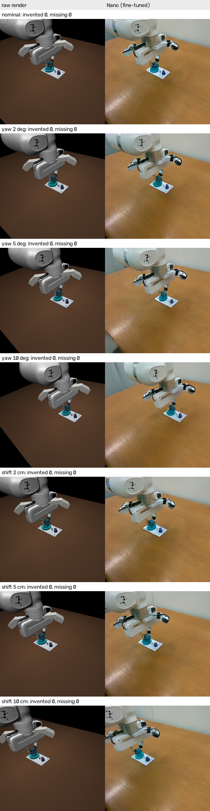
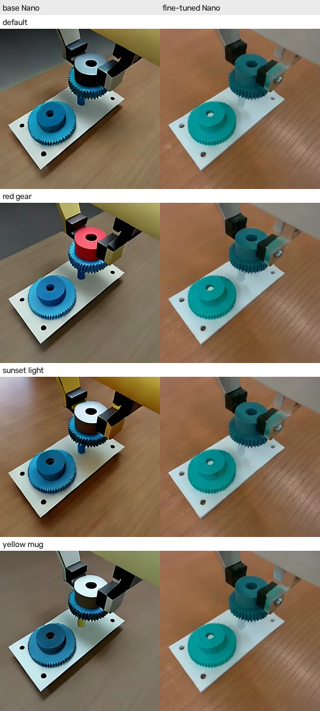
Any styler that can add or remove objects would still need a guard before it is used inside a control loop; in these tests Nano did neither.
10. Related work and outlook
RoboRender (Huang, Ai, …, Li Fei-Fei, Jiajun Wu; arXiv 2610.09254, 2026-10-07) asks whether a video model can make simulated data good enough to train real policies, at scale, and answers yes for visually driven tasks. Our project asks different questions: how little real data is enough, whether a styled simulator can evaluate a policy, and what remains when the task is contact-rich.
| RoboRender | This project | |
|---|---|---|
| Base model | Wan2.1-T2V-1.3B | Cosmos3-Nano 8B |
| Real training data | ~127k samples (AgiBot-World-Alpha + DROID), 39,692 scenes | 20 episodes (~10 minutes), one rig |
| Conditioning | Sim depth, robot RGB and mask, a structured scene prompt, the preceding frame | Edge + depth, fixed caption, autoregressive |
| Multiview | Views stacked into one latent, consistent across cameras | Each camera styled independently |
| Prompt following | Kept; the prompt sets textures, background and distractors | Lost after fine-tuning with a fixed prompt |
| Speed | A 3-view, 81-frame clip in 4.29 s on one H200 after distillation (6 steps), 416×240 | 16.9 frames/s at 10 steps, 256² (not like-for-like) |
| How the renderer is used | Train π0.5 on rendered sim; evaluate only on the real robot | Evaluate policies in the styled sim against the robot; training on styled data tested at 128 demonstrations (section 6.1) |
| Tasks | Pick-and-place, opening a drawer or fridge, mobile pick | Tight-tolerance gear insertion |
| Real results | 71% average vs 10% raw sim and 20% domain randomization; 10 rollouts per task | 76k: 8/16 real vs 16/16 raw sim |
They also report Cosmos-Transfer2.5 as a baseline at 30% (drawer) and 0% (fridge).
What this project adds. (1) Evidence on the renderer as an evaluator, including the per-seed agreement and its limits (section 4). (2) The contact-rich limit: real and sim failures are disjoint, and a visual-only fix cannot reach the dynamics gap (sections 4–5). (3) Low-data adaptation: 10 minutes from one rig gave convincing output. (4) A stage-by-stage account of where a real-to-sim-to-real pipeline loses accuracy (section 7), useful whichever renderer wins.
Does video-model style transfer make sense in production? Offline, yes: for generating training data and for large-scale evaluation, where seconds per clip are acceptable. Inside a 30 Hz control loop it is hard to justify, and it needs a guard against invented or missing objects. It fixes appearance, not dynamics, so contact-rich tasks still need better contact modelling or real interaction data. It should be compared, by cost per point of real success, with Gaussian-splat real-to-sim, domain randomization (section 8) and simply collecting more real demonstrations.
Sources: RoboRender on arXiv, RoboRender project page.
11. Practical lessons
Four constraints shaped the project; each is written as the practice it led to.
| Constraint | Effect | Practice adopted |
|---|---|---|
| The workstation moved several times | The sim scene and the seeded initial states had to be re-aligned | Derive real seeds from the sim's nominal poses; re-check the overlay before every real evaluation |
| Shared static cameras, moved on purpose or by accident | 29 calibration rounds; older policies needed an image warp | Version the camera calibration with every dataset and policy; a fast per-session camera check |
| Scarce compute | One account with budget; batch waits of days; 2-hour interactive slots | Split work into resumable 2-hour steps; smoke-test every new path before a long run |
| Shared-filesystem quota and outages | Lost clips and failed job segments | Tolerate missing clips; checkpoint every 50 iterations |
For the record: the cameras or the rig moved at least 9 times (7/28, 8/11, the room move on 8/21–22, 8/29, 9/08, 9/30, 10/03, 10/09, 10/18). On 9/27 two of three compute accounts had no hours left; batch waits ran 16–28 hours in October, and two waits of ~29 and ~21 hours were lost to crashes within seconds of starting.
Appendix A. Open items
- Train on styled data. Run the 128-vs-128 policies (section 6.1) on the real rig. This answers whether closing the rendering gap in training raises real success. Optional variants exploit Nano's architecture: distil into a student that reads Nano's latents instead of decoded pixels, style only every k-th frame, or use autoregressive styling during distillation.
- Finish ref_sim (section 8); add its results here.
- A matched backbone comparison for section 3 (img2img-turbo and Nano under the same policy, protocol and realism metrics).
Appendix B. Reproducibility
| What | Where |
|---|---|
| Raw-sim and augsim evaluations | jobs/sim_eval_mrc.sbatch, jobs/augsim_nano_eval.sbatch; results under /work/hdd/bfqx/jzhou21/act_mrc_v5/ |
| Real evaluations | wmrl/eval-logs/real_eval_20261019.md (76k), real_eval_20261013.md (52k) |
| Side-by-side reconstructions | jobs/recon_nano_76k.sbatch, jobs/recon_panel_76k.py; videos in wmrl/real_eval/act_v5_76k_20261019/panels_3x3/ |
| Probes 1–3 | jobs/divergence_probe.py, jobs/consumed_regen.sbatch; plots in wmrl/docs/divergence_20261022/ |
| Probes 4–5 | jobs/ar_vs_perframe.py, jobs/act_layerwise.py |
| AR_augsim | augsim/infer/nano_mrc_server.py (NANO_AR=1), augsim/t25/closed_loop.py (WMRL_STYLE_AR=1; it patches the env from outside, since envs_mrc.py is part of the policy's control-contract hash), jobs/augsim_nano_eval.sbatch AR=1 |
| ref_sim | wmrl/wmrl/sim/mrc_gear/ref_sim.py, jobs/refsim_probe.py, jobs/act_refsim_lanes.sh; images in wmrl/docs/ref_sim/ |
| Per-seed tables | wmrl/docs/wrapup/per_seed_76k.tsv and the per-setting TSVs beside it |